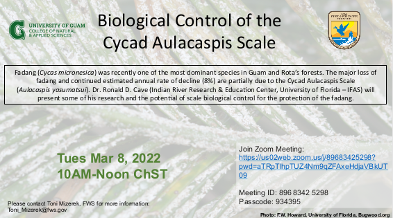

This seminar was organized by the US Fish and Wildlife Service and the University of Guam College of Natural and Applied Sciences as a technical meeting to discuss prospects for biological control of cycad aulacaspis scale (CAS), Aulacaspis yasumatsui. This tiny scale insect is killing Guam's endemic cycad plant, Cycas micronesica, also known as fadang. Prior to arrival of CAS on Guam in 2003, C. micronesica was the most abundant tree in Guam's forests. Since then, 96% of these plants have died, resulting in this species being added to the US List of Threatened and Endangered Species.
Announcement

Full video recording of the seminar
Introductory remarks
Ronald Cave: Biological control of the cycad aulacaspis scale
Presentation slides
Aubrey Moore: Biological control of cycad scale, Aulacaspis yasumatsui, attacking Guam's endemic cycad, Cycas micronesica
Presentation slides